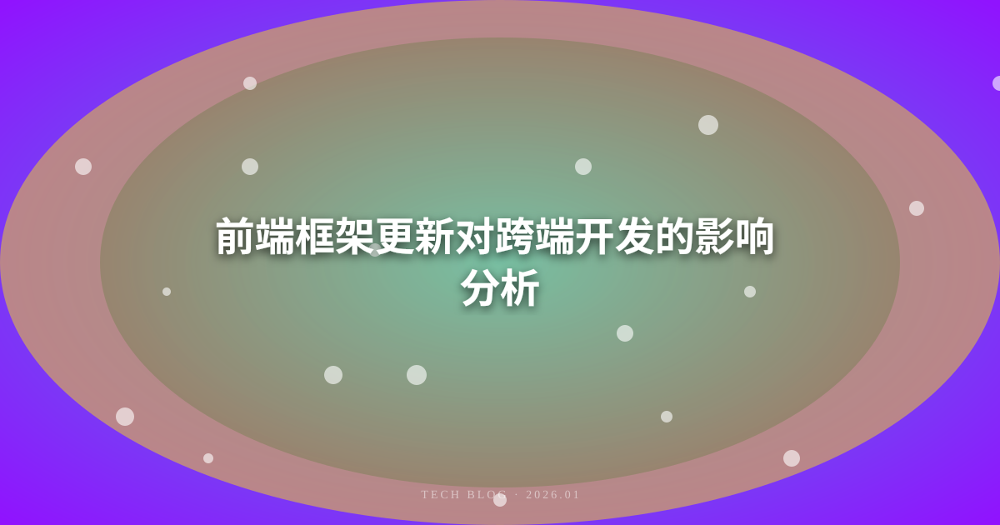
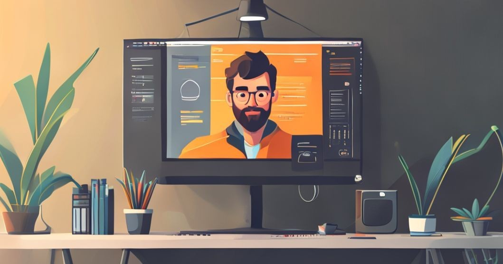

本文分析了前端框架的更新对跨端开发的影响，包括技术演进、工具选择、开发效率和跨平台兼容性等方面。通过探讨主流前端框架如React、Vue和Angular的最新动态，阐述它们如何影响开发者在不同平台（如Web、移动端和桌面）的工作方式，同时提供了一些最佳实践，以帮助开发者在快速变化的技术环境中保持竞争力。
前端框架更新对跨端开发的影响分析
随着科技的快速发展，前端框架的更新迭代频率越来越高。这些更新不仅影响了前端开发的效率和体验，也对跨端开发产生了深远的影响。本文将从技术演进、工具选择、开发效率和跨平台兼容性等多个方面，深入分析前端框架的更新对跨端开发的影响。
1. 技术演进与前端框架
1.1 主流前端框架概述
当前，React、Vue和Angular是最受欢迎的前端框架。这些框架都在持续进化，以适应不断变化的开发需求。
- React：Facebook开发的组件化框架，以其虚拟DOM和单向数据流著称。React社区活跃，生态系统丰富，支持React Native用于移动端开发。
- Vue：由尤雨溪开发的渐进式框架，易于上手，适合快速开发小型项目，并且在大型项目中也表现出色。Vue也有相应的移动端解决方案如Weex。
- Angular：Google开发的全功能框架，提供了大量的内置功能，适合大型企业级应用。Angular也在努力支持跨平台应用开发。
1.2 最新技术趋势
近年来，前端框架更新的趋势主要体现在以下几个方面：
- Hooks与Composition API：React引入Hooks，Vue推出Composition API，强调逻辑复用和组件的可组合性。这些新特性使得代码的可维护性和可读性显著提高。
- Server-Side Rendering（SSR）：框架如Next.js（React）和Nuxt.js（Vue）开始流行，允许开发者在服务器端渲染页面，提升SEO和首屏加载速度。
- TypeScript的普及：越来越多的框架支持TypeScript，增强了代码的类型安全性，使得跨端开发更加可靠。
2. 工具选择与开发效率
2.1 开发工具的演变
随着前端框架的更新，相关开发工具和生态系统也在不断演变。开发者可选择的工具越来越多，极大地提高了开发效率。例如：
- 构建工具：Webpack、Vite等现代构建工具通过更快的构建速度和灵活的配置，帮助开发者更高效地管理项目。
- 调试工具：Chrome开发者工具和React DevTools等调试工具的优化，使得开发者能够更快速地定位和解决问题。
2.2 整体开发效率的提升
前端框架的更新直接影响了开发者的工作方式。通过采用新特性和工具，开发者能够：
- 更快地搭建原型，缩短开发周期。
- 更高效地进行团队协作，利用组件化和模块化的特性进行分工。
- 更加专注于业务逻辑，而非底层实现。
3. 跨平台兼容性
3.1 跨端开发的重要性
随着移动互联网的普及，跨平台开发变得越来越重要。开发者需要在多个平台（如Web、iOS、Android）上提供一致的用户体验。前端框架的更新使得这一目标更容易实现。
3.2 框架对跨平台兼容性的支持
- React Native：允许开发者使用React的语法构建原生移动应用，极大地提高了跨端开发的效率。
- Vue与Weex：Vue支持通过Weex进行跨平台开发，使得开发者能够用Vue的语法构建移动端应用。
- Flutter：虽然不是传统的前端框架，但Flutter作为一款跨平台框架，正在获得越来越多的关注，支持通过Dart语言开发Web、移动和桌面应用。
3.3 兼容性问题的挑战
尽管前端框架的更新带来了许多便利，但跨平台开发仍面临许多挑战：
- 平台差异：不同平台的特性和限制可能导致代码在某个平台上无法正常运行。
- 性能优化：跨平台应用在性能上往往不如原生应用，开发者需要在性能和用户体验之间找到平衡。
4. 最佳实践与建议

4.1 选择合适的框架
开发者在选择框架时，应该考虑项目需求、团队技能和社区支持等因素。选择一个适合的框架可以大大提高开发效率。
4.2 持续学习与更新
前端技术更新迅速，开发者需要保持学习的热情，关注最新的技术动态和行业趋势，及时更新自己的技术栈。
4.3 关注用户体验
在跨端开发中，用户体验始终是首要考虑的因素。开发者应努力确保在不同平台上提供一致的用户体验。